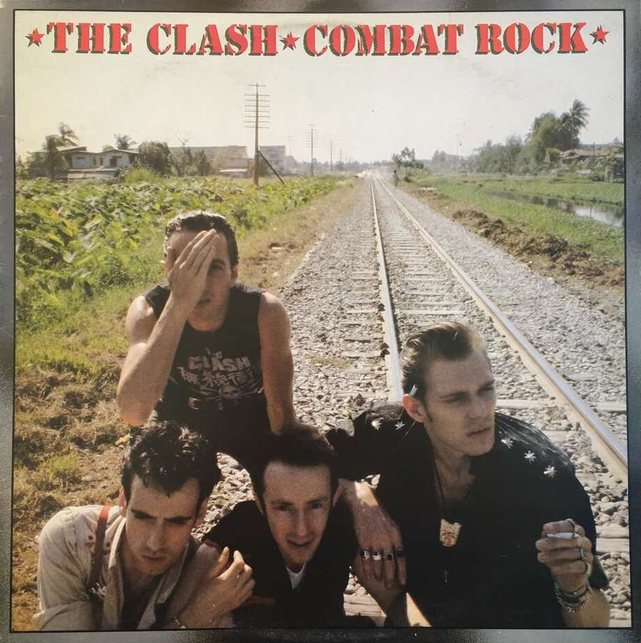
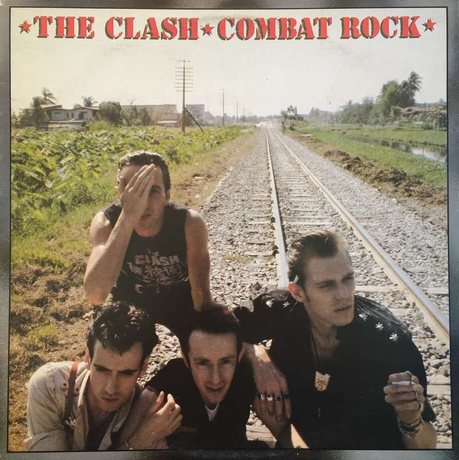
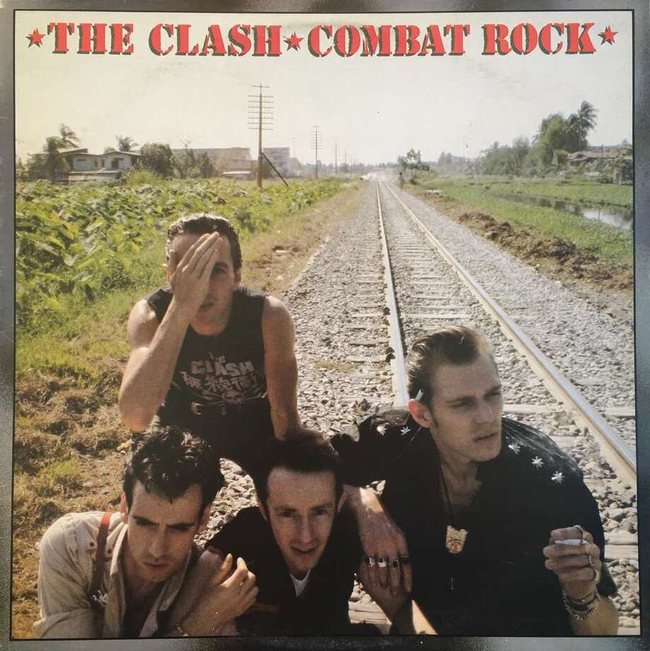
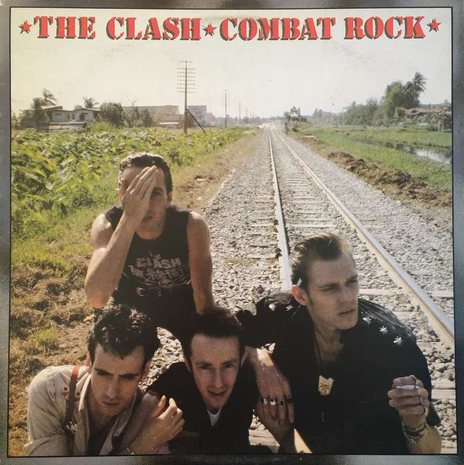
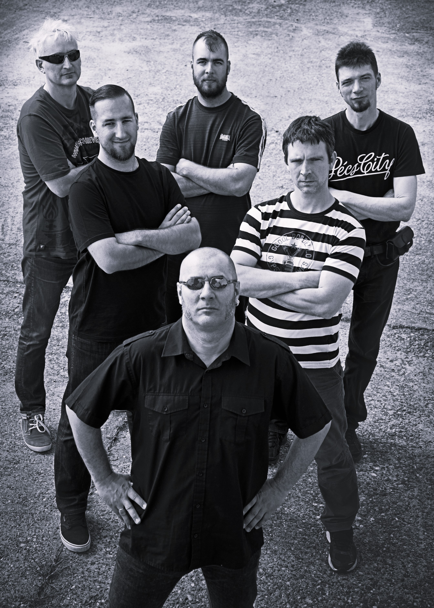
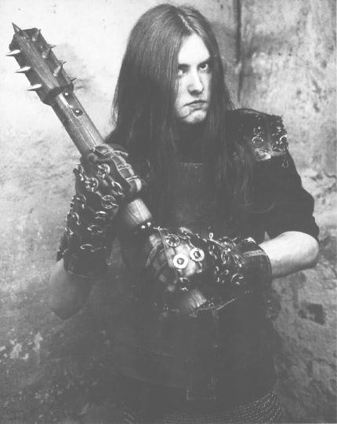

 YesA Yes egy 1968-ban létrehozot, főként progresszív rock banda. Nagy alaknak számít a Yes a progresszív rock világában, hiszen a 1970-es években ők voltak a műfaj zászlóshajói. Zenéjükkel segítettek a prog rock hangzás kialakulásában, és sok klasszikus dalt, nagylemezt alkottak a műfajban. A zenekar eredeti felállása a következő volt: Jon Anderson, mint énekes; Tony Banks, mint gitáros; Chris Squire, mint basszusgitáros; Bill Bruford, mint dobos; Tony Kaye, mint billentyűs. A jelenlegi (2023) felállás egyike sem eredeti banda tag. Az első lemez, amely már nagyobb közönséghez is eljutott (ez volt időrendileg a harmadik albumuk), az az 1971-es The Yes Album volt. Legelső albumuk egy self-titled lemez volt, ami még nem számított prognak. Csak egy-két dalról lehet elmondani, hogy előre segtették a banda hangzásának kialakítását. A második, Time and a Word, már több helyen tartalmazta a progos elemeket, de az a hangzás a már előbb megemlített The Yes Albumra fog kialakulni. A második Onnantól kezdve jobbnál jobb lemezeket adtak ki. Erre jó példa a második 1971-es lemezük, a Fragile; az 1972-es Close to the Edge; az 1973-as Tales from Topographic Oceans. Azóta a banda nem hoz olyan sikereket, mint egykoron. 1994-ben bekerültek a Rock and Roll Hall of Fame-be (rock and roll dicsőségfal). Több albumuk lett ezüst, arany és platina lemez. Kétségtelen, hogy a Yes nélkül a progresszív rock, sőt, akár a zene sem lenne ugyan az, mint ma. |
|---|

Frank Zappa és a Mothers of InventionFrank Zappa: Pályafutását a Mothers of Inventionben kezdte 1966-ban. FZ 1969-re mesterévé vált a gitárnak, és a progresszív rockban számos klasszikus albumot adott ki. Zenéiben humort, iróniát, történet mesélést és elvontságot használt, élő fellépésein komplexen játszott, de oly' módon, hogy az szórakoztató legyen a hallgató/néző számára. Prog rock/jazz fusion remekműnek számít a Hot Rats és az Apostrophe ('). A progresszív rock egyik legismertebb és elismertebb alakja volt, és még ma is annak tartják. FZ-nek egy igazán kiemelkedő album sikere sem volt, helyette, a már fentebb említett élő fellépései miatt szerették őt. Tudása elvarázsolta azokat, kik hallották őt. Nagyon sok jót kapott, de legalább annyi rosszat is. Nagyon-nagyon sokan voltak, kik bírálták munkásságát és leszólták azt. Zappa egy megnyílvánulásban és zeneileg nagyon megosztó személy volt. Az amerikai Saturday Night Live műsorból ki is lett tiltva. Tagadhatatlan, hogy amit hátrahagyott, azt megismételni nem lehet. Tragikus 1993-ban bekövetkezett halála után, 1995-ben bekerült a Rock and Roll Hall of Fame-be. Frank Zappa 1991. június 30-án fellépett a Tabán zenei fesztiválon magyar zenészek kíséretével. Készült FZ-vel egy interjú, melyben elmondta, hogy ő zeneszerzőnek tartja magát, minstem zenésznek. Halála előtt kb. egy hónappal kiadott egy albumot, amin olyan dalok vannak, amiket Zappa komponált. Az album a 'The Yellow Shark' névre hallgat. Elárulta még, hogy politikai pályára is szeretett volna törni, de, mint tudjuk, ez nem tudta megvalósulni. The Mothers of Invention: A Mothers of Invention egy a kora '60-as évek amerikájában alapult blues együttes volt. A '60-as évek végére már áttértek a pszichedelikus rockra. Az együttes fontos részét képezte Frank Zappa, aki később, mint fent is olvasható, szóló karrierbe is kezdett. A '70-es években újra összeálltak, viszont pár dolog más volt. A nevüket anyák napján lerövidítették The Mothers of Invention-ről simán The Mothers-re. A felállás is változott, de Zappa még mindig fontos része volt az együttesnek. Ilyenkor már nem blues-t, se nem pszichedelikus rockot, hanem progresszív rockot. Ennek Zappa lehetett a fő oka, hiszen ő már '69-ben adott ki egy fúziós jazz/progresszív rock albumot. 1971. december 4-én, Frank Zappa születésnapján felléptek a Montreux kaszinóban. A hely a Montreux-i Jazz Fesztiválnak nyújt helyet évente. A műsor, viszont tragédiával ért véget. Valaki a közönségből egy jelzőpisztollyal tüzet gyújtott, ami a hely leégésével végződött. Az eseményről a Deep Purple is írt pár sort a 'Smoke on the Water'-ben. Hat nappal később felléptek a Londoni Rainbow Theatre-ben, ahol Zappát súlyosan megsérült, miután egy ember a közönségben felrohant a színpadra és lelökte onnan. Zappa agyrászkódással, több csonttöréssel és gégetöréssel került kórházba hat hétig. A Mothers főként egy együttes volt Zappa koncertjeire. 1975-ben feloszlottak. |
|---|

Emerson, Lake & PalmerAz Emerson, Lake & Palmer egy 1970-ben alapított banda volt. A felállás az alábbi volt: Greg Lake, mint énekes és basszusgitáros; Keith Emerson, mint billentyűs; Carl Palmer, mint dobos. Jól ismert alaknak számít az ELP. A dalaik ritkán tartalmaznak elektromos gitárt (melyet szintén Greg Lake játszott), helyette Keith Emerson gyors és komplex billentyűsjátéka dominált. Emersont stílusárol egyből fel lehet ismerni, ha egyszer meghalljuk. Keith Emerson volt a szintetizátorok Jimi Hendrixe, ami meg is mutatkozik. Ő segítette a szintetizátorok használatát elősegíteni. Szólói mindig hatottak a hallgatóra. Többféle bilentyűsön is játszott: Moog analóg szintetizátoron; elektromos és klasszikus zongorán; orgonán; mellotronon. Carl Palmer játéka sem kifelejtendő. Gyors és erőteljes játéka megadja az ELP klasszikus hangzását. |
|---|

HétköznaPI CSAlódások"1990 novemberében négy kocsmatöltelék az egyik pécsi krimóban elhatározza, hogy punkzenekart alapít. Így is lett." https://hetkoznapicsalodasok.hu/zenekar |
|---|

BurzumVarg Vikernes egy 1973-ban született norvég black metál zenész. A '90-es években elindította a "Burzum" nevű egyszemélyes blackm etál projektet. Vikernes még a Burzum előtt a Mayhem nevá szintén black metál bandában játszott. Vikernesnek és a Mayhem vicces történetei vannak. A '90-es évekbeli black metál mozgalmakban részt vett. Így történt, hogy több ember, beleértve Vikernest felgyújtottak sok katolikus templomot Norvégiában. A banda énekese, Per Yngve Ohlin (Dead) 1991-es öngyilkosságát a gitáros, Øystein Aarseth (Euronymous) lefotózta, ami a "The Dawn of the Black Hearts" bootleg album borítója lett. Vikernes 1994-ben megölte a Mayhem volt gitárosát, Euronymoust, ami után letartóztatták és bortönbe zárták a norvégiában maximum börtönbűntetésként kiadható 21 évre. Vikernest emellett több dolog miatt letartóztatták már, például terrorizmus vádjával Franciaországban, de végül az ügy el lett engedve. Mielőtt bezárták volna, sok albumot adott ki, szám szerint hármat, plusz egy EP-t. A börtöntben is dolgozott dalokon. Időnként meg volt neki engedve, hogy szintetizátoron játsszon, ennek köszönhető a "Filosofem" néhány dala, "Dauði Baldrs", a "Hliðsjalf" albumok hangzása. A korai '10-es években visszatért a black metál vonalra, majd később visszatért az ambientre, amivel be is fejezte zenei karrierjét 2020-ban a "Thulean Mysteries" albummal. Volt YouTube csatornája is, ami azóta törlésre került. Ott gondolatait, történeteit osztotta meg a nagyvilággal, sőt, egy időben neonáci nézeteket is vallott. |
|---|